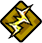
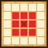
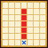
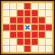

| Lv: | 150 |
|---|---|
| HP: | 2193 |
| MP: | 773 |
| ATK: | 175 |
| DEF: | 623 |
| AGL: | 551 |
| WIS: | 555 |
| Move: | 3 |
| Weight: | -- |
| Weaknesses: | |
|
/ | |
|
|---|---|---|---|---|---|
| Resistances: | / | |
|
||
| Immunities: | |
| Family: |  |
Role: |  |
Element: |  |
|---|
Note: All perks/abilities denoted with an * are using unofficial translations
| Abilities | ||||||
|---|---|---|---|---|---|---|
| Level | Type | Name | MP | Element | Range | Description |
| 1 |  |
Death Ray* デス・レイ |
137 |  |
 2-4 |
Deals major martial damage (393 base potency) to all enemies in area of effect, often raises damage taken for 3 turns |
| 38 | |
Destroyer's Roar* 破壊神の咆哮 |
139 | |
 Straight Line |
Deals major surehit martial damage (365 base potency) to all enemies in area of effect, often paralyses, curses, or confuses |
| 52 |  |
Blighting Kazapple* 絶望のジゴデイン |
160 |  |
 Rhombus (L) |
Deals huge Zap-type spell damage to all enemies in area of effect |
| Supreme Archfiend Perk | ||
|---|---|---|
| Level | Name | Description |
| 1 | Obsessive Destruction* 破壊の執念 |
When attacked and KO'd by enemy: Obsessive Destruction* heals High Priest Hargon, 1 time per battle (Obsessive Destruction*: Heals a huge amount of HP for 1 ally, nullifies damage taken up to 3 times in 99 turns, and grants x1.5 spell and martial potency/recovery for 1 turn) When High Priest Hargon is KO'd:Triggers Obsessive Destruction*, 1 time per battle (Obsessive Destruction*: Heals a huge amount of HP for the user, nullifies damage taken up to 3 times in 99 turns, and grants x1.5 spell and martial potency/recovery for 1 turn) |
| Base Perks | ||
|---|---|---|
| Level | Name | Description |
| 1 | Barriers of Impermanence* 無常の結界 |
Battle start: Nullifies damage taken up to 3 times in 99 turns |
| 1 | Harbinger of Destruction* 破滅への導き |
When any ally (incl. self) inflicts Paralysis, Curse, or Confusion on an enemy with an ability: Heals 50% of the user's max HP and raises spell and martial potency/recovery for 3 turns (4 turns if activated by an ally's ability) This perk can be triggered by non-damage dealing abilities |
| 1 | Dark God's Wrath* 邪神の怒り |
Battle start: Nullifies some status ailments for 3 turns Action start on odd turns until turn 10: Raises DEF, AGL, and damage dealt for 3 turns |
| 1 | Vital Heal* バイタルヒール |
Heals 50% of max HP when the user's HP drops to 70% or less, 1 time per battle This perk can be triggered when the attack is from an ally |
| 1 | Auto HP/MP Regen | Action start: Heals 10% of max HP and restores 8% of max MP |
| 90, 100, 110, 120, 130, 140 | Spell Potency/Recovery +10% | Raises spell potency/recovery by 10% |
| 90, 100, 110, 120, 130, 140 | Martial Potency/Recovery +10% | Raises martial potency/recovery by 10% |